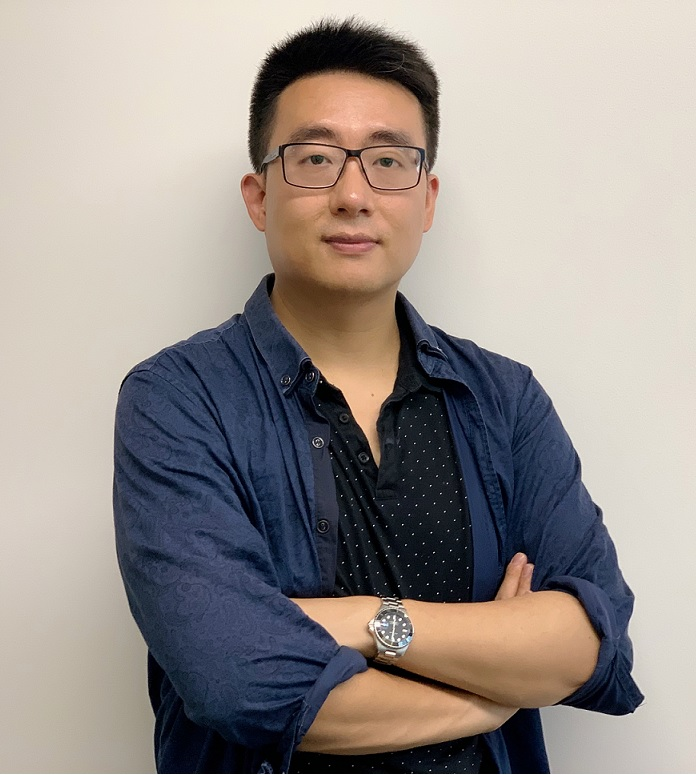
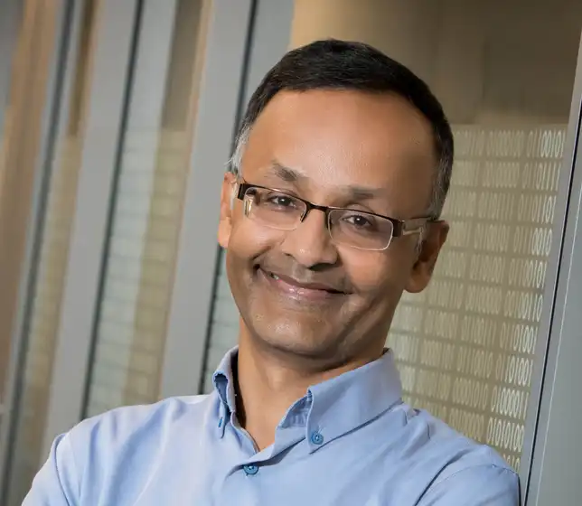

Macquaire University, Australia
Tier IV, Japan
Washington University in St. Louis, USA
We warmly welcome all participants to Shonan Seminar 235.
This seminar brings together researchers from artificial intelligence, formal methods, software engineering, robotics, and cyber-physical systems to explore how foundation models—particularly large language models—can be used to advance the synthesis, testing, and verification of learning-enabled CPS.
The Shonan Meeting provides a unique environment for open, forward-looking discussion and cross-disciplinary collaboration. We hope this seminar will not only deepen shared understanding but also help shape future research directions and long-term collaborations in trustworthy AI and CPS.
We look forward to an engaging and productive meeting.
|
 |
|
 |
|
Xi (James) Zheng, Macquaire University, Australia |
Simon Thompson, Tier IV, Japan |
Sanjoy Baruah, Washington University in St. Louis, USA |